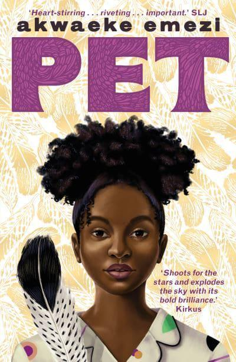
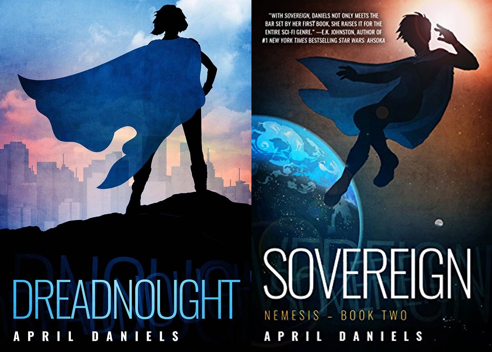
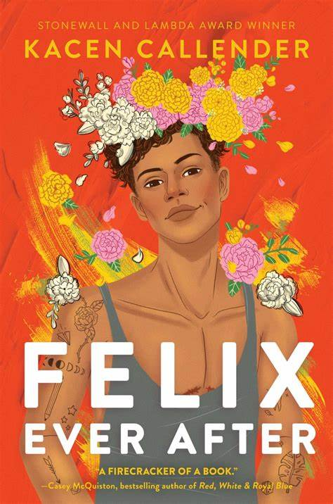

Maiden, Mother, and Crone: Fantastical Trans Femmes Edited by Gwen Benaway

Drawing on high fantasy and other genres of fantasy writing, Maiden, Mother, Crone is the first anthology by trans femme authors to explore the realms of magic, supernatural beings, and alternate universes. Enter a universe of wonder where trans femmes are powerful heroines, sorceresses, and warriors fighting against dark forces in vivid magical worlds.
Pet by Akwaeke Emezi
A National Book Award finalist, Pet chronicles the relationship between Jam, a transgender teen, and her best friend, Redemption, a mythical creature who's come to protect her from a monster that no one else in the novel seems able to admit exists.
All Out: The No-Longer-Secret Stories of Queer Teens throughout the Ages by Saundra Michelle and others

Take a journey through time and genres and discover a past where queer figures live, love and shape the world around them. Seventeen of the best young adult authors across the queer spectrum have come together to create a collection of beautifully written diverse historical fiction for teens. From a retelling of Little Red Riding Hood set in war-torn 1870s Mexico featuring a transgender soldier, to two girls falling in love while mourning the death of Kurt Cobain, forbidden love in a sixteenth-century Spanish convent or an asexual girl discovering her identity amid the 1970s roller-disco scene, All Out tells a diverse range of stories across cultures, time periods and identities, shedding light on an area of history often ignored or forgotten.
Dreadnought: Nemesis - Book One and Sovereign: Nemesis - Book Two by April Daniels
Danny Tozer has a problem: she just inherited the powers of Dreadnought, the world's greatest superhero. Until Dreadnought fell out of the sky and died right in front of her, Danny was trying to keep people from finding out she's transgender. But before he expired, Dreadnought passed his mantle to her, and those secondhand superpowers transformed Danny's body into what she's always thought it should be. Now there's no hiding that she's a girl. It should be the happiest time of her life, but Danny's first weeks finally living in a body that fits her are more difficult and complicated than she could have imagined. Between her father's dangerous obsession with "curing" her girlhood, her best friend suddenly acting like he's entitled to date her, and her fellow superheroes arguing over her place in their ranks, Danny feels like she's in over her head. She doesn't have time to adjust. Dreadnough's murderer, a cyborg named Utopia, still haunts the streets of New Port City, threatening destruction. If Danny can't sort through the confusion of coming out, master her powers, and stop Utopia in time, humanity faces extinction.
Paul Takes the Form of a Mortal Girl by Andrea Lawlor

It's 1993 and Paul Polydoris tends bar at the only gay club in a university town thrumming with politics and partying. He studies queer theory, has a dyke best friend, makes zines, and is a flaneur with a rich dating life. But Paul's also got a secret: he's a shapeshifter. Oscillating wildly from Riot Grrrl to leather cub, Women's Studies major to trade, Paul transforms his body at will in a series of adventures that take him from Iowa City to Boystown to Provincetown and finally to San Francisco, a journey through the deep queer archives of struggle and pleasure.
Redefining Realness: My Path to Womanhood, Identity, Love & So Much More by Janet Mock
This powerful memoir follows Mock's quest for identity, from an early, unwavering conviction about her gender to a turbulent adolescence in Honolulu that saw her transitioning during the tender years of high school, self-medicating with hormones at fifteen, and flying across the world alone for sex reassignment surgery at just eighteen. With unflinching honesty, Mock uses her own experience to impart vital insight about the unique challenges and vulnerabilities of trans youth and brave girls like herself.
Queer Sex: A Trans and Non-Binary Guide to Intimacy, Pleasure and Relationships by Juno Roche

In this frank, funny and poignant book, transgender activist Juno Roche discusses sex, desire and dating with leading figures from the trans and non-binary community. Calling out prejudices and inspiring readers to explore their own concepts of intimacy and sexuality, the first-hand accounts celebrate the wonder and potential of trans bodies and push at the boundaries of how society views gender, sexuality and relationships. Empowering and necessary, this collection shows all trans people deserve to feel brave, beautiful and sexy.
Gender Queer: A Memoir by Maia Kobabe

In 2014, Maia Kobabe, who uses e/em/eir pronouns, thought that a comic of reading statistics would be the last autobiographical comic e would ever write. At the time, it was the only thing e felt comfortable with strangers knowing about em. Now, Gender Queer is here. Maia's intensely cathartic autobiography charts eir journey of self-identity, which includes the mortification and confusion of adolescent crushes, grappling with how to come out to family and society, bonding with friends over erotic gay fanfiction, and facing the trauma and fundamental violation of pap smears. Started as a way to explain to eir family what it means to be nonbinary and asexual, Gender Queer is more than a personal story: it is a useful and touching guide on gender identity-what it means and how to think about it-for advocates, friends, and humans everywhere.
I Wish You All the Best by Mason Deaver

When Ben De Backer comes out to their parents as nonbinary, they're thrown out of their house and forced to move in with their estranged older sister, Hannah, and her husband, Thomas, whom Ben has never even met. Struggling with an anxiety disorder compounded by their parents' rejection, they come out only to Hannah, Thomas, and their therapist and try to keep a low profile in a new school. But Ben's attempts to survive the last half of senior year unnoticed are thwarted when Nathan Allan, a funny and charismatic student, decides to take Ben under his wing. As Ben and Nathan's friendship grows, their feelings for each other begin to change, and what started as a disastrous turn of events looks like it might just be a chance to start a happier new life. At turns heartbreaking and joyous, I Wish You All the Best is both a celebration of life, friendship, and love, and a shining example of hope in the face of adversity..
Felix Ever After by Kacen Callender
Felix Love has never been in love'and, yes, he's painfully aware of the irony. He desperately wants to know what it's like and why it seems so easy for everyone but him to find someone. What's worse is that, even though he is proud of his identity, Felix also secretly fears that he's one marginalization too many-Black, queer, and transgender-to ever get his own happily-ever-after.
Arcane Perfection: An Anthology by Queer, Trans and Intersex Witches Edited by Pat Mosley

A collection of essays, poetry, art, rage, love, rituals, spells, and musings by, for, and about Queer, Trans, and Intersex Witches. The book began as a coven project to further curate the Witchery of our Queer, Trans, and Intersex members, the project was expanded to encompass Queer, Trans, or Intersex people from around the world.